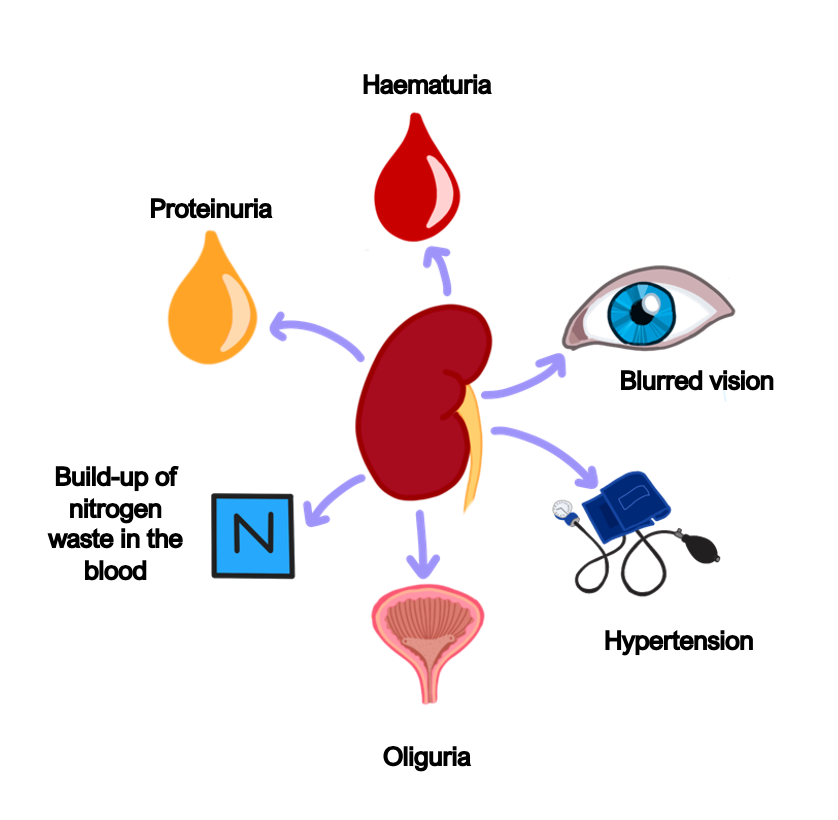
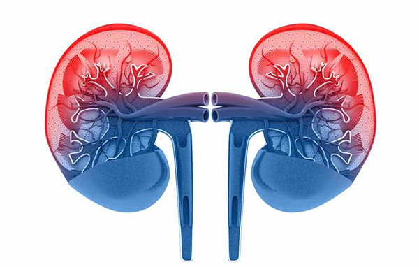
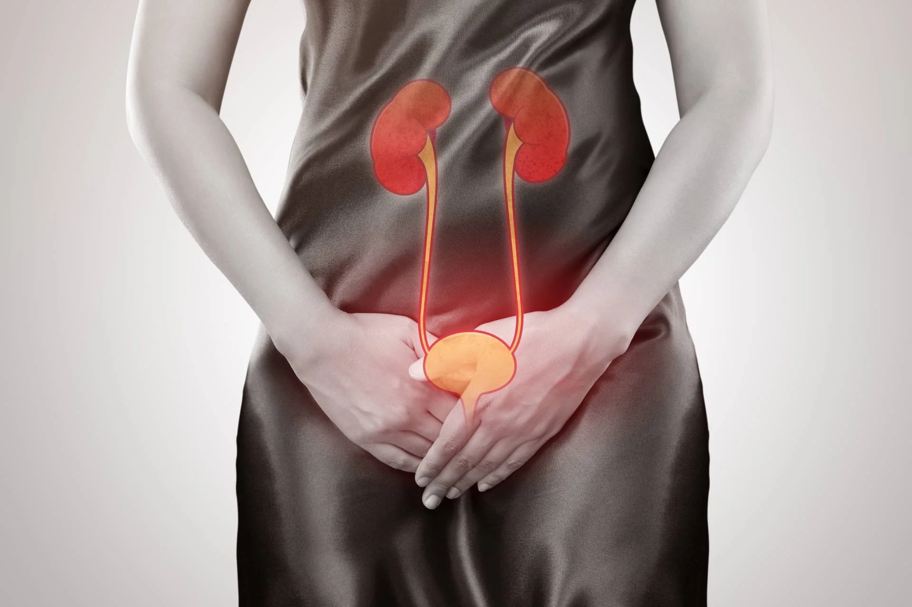
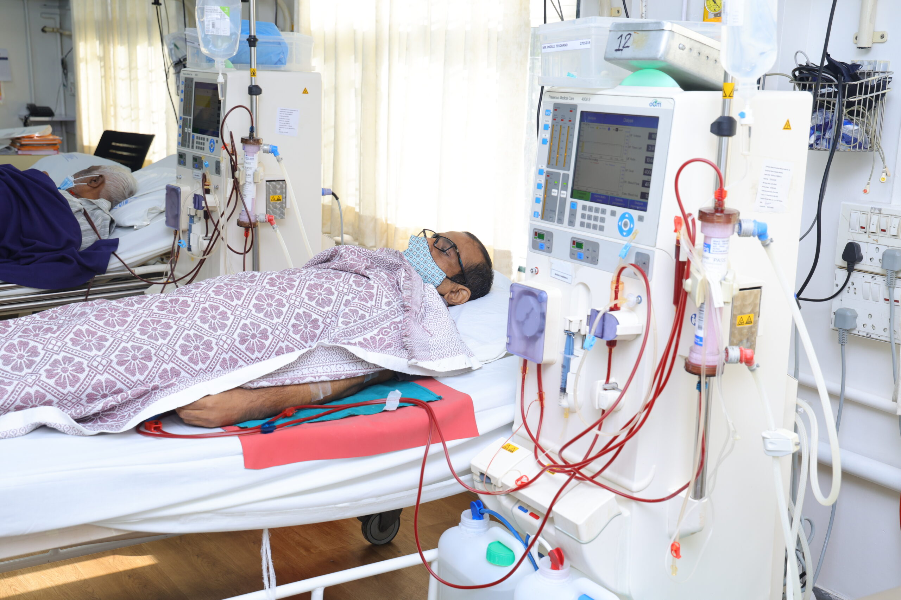
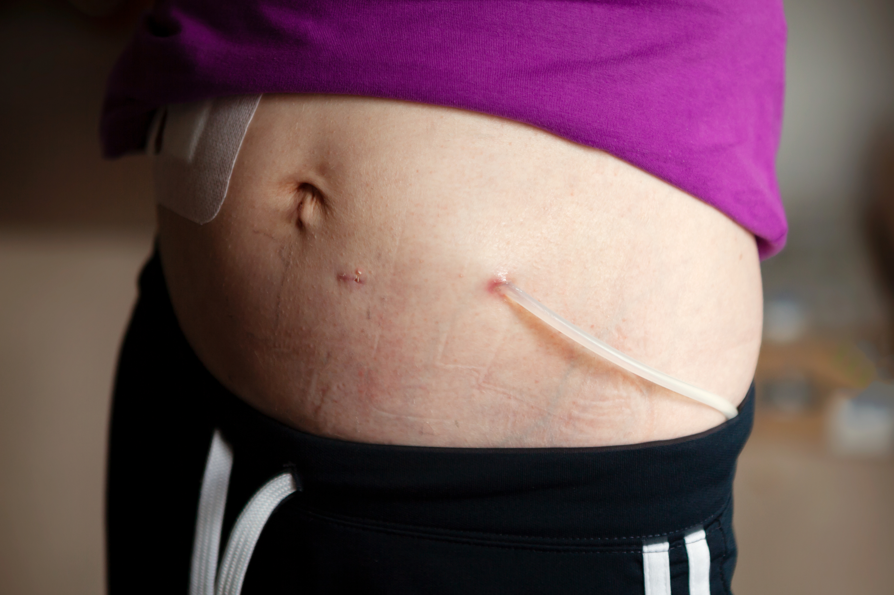
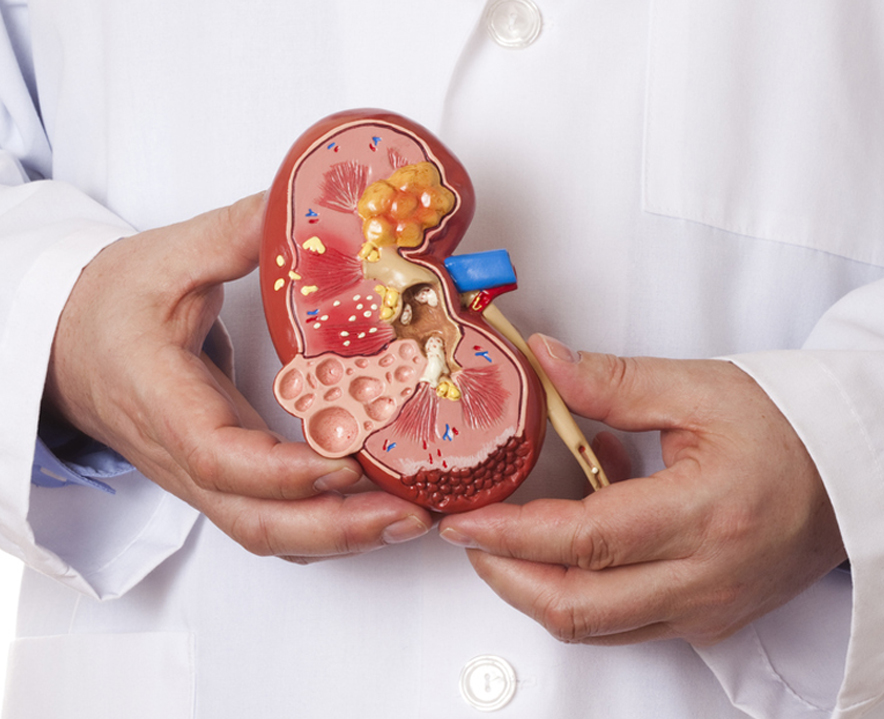
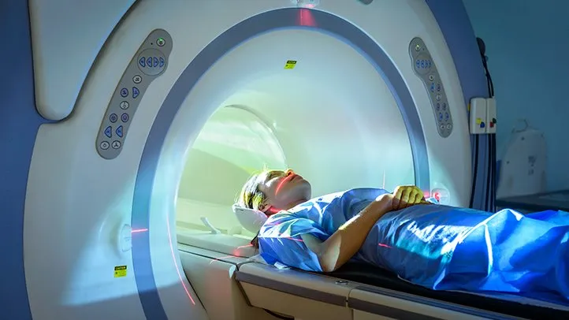
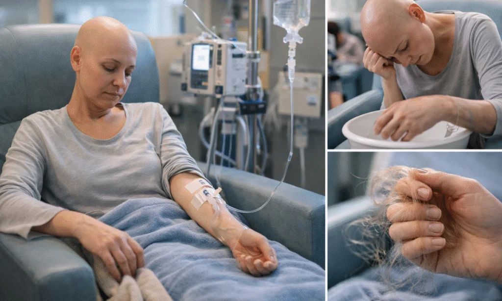
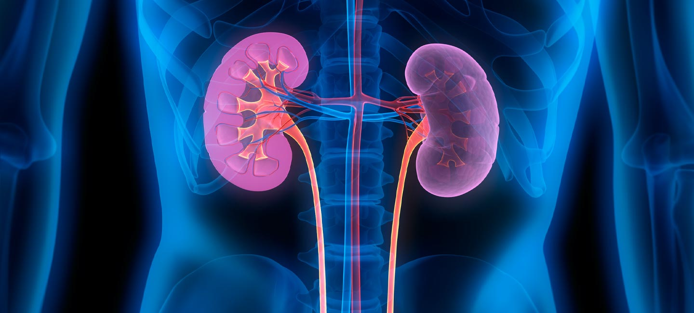
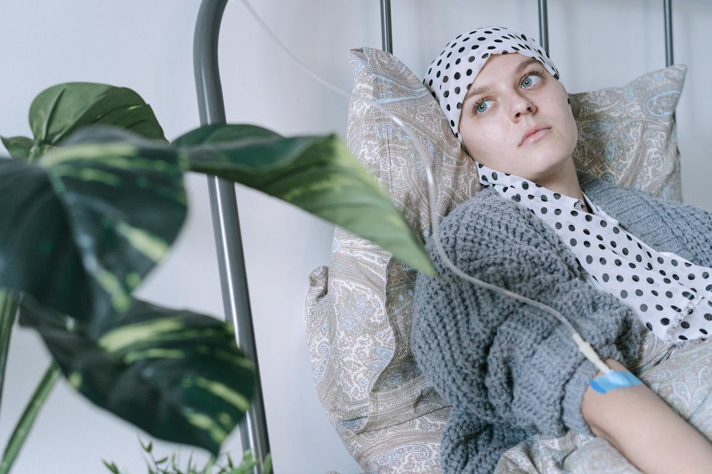

Young Hypertension
High blood pressure in young adults is often an early sign of underlying kidney or hormonal disease. We identify the root cause and start targeted treatment to protect long-term kidney and heart health.
Browse by speciality, understand what each service covers, and see where both doctors intersect through onco-nephrology and supportive care.

Browse each speciality below. Onco-nephrology and supportive care connect both tracks for patients whose kidney and cancer needs overlap.
High blood pressure in young adults is often an early sign of underlying kidney or hormonal disease. We identify the root cause and start targeted treatment to protect long-term kidney and heart health.

Early-onset diabetes needs tight, structured control to prevent silent damage to the kidneys. Care focuses on blood-sugar management, complication screening, and slowing diabetic kidney disease.

CKD is diagnosed and staged early so progression can be slowed with the right medication, diet, and blood-pressure control. Patients receive a clear long-term plan with regular monitoring.

A comprehensive work-up identifies the cause of heavy protein loss, followed by a structured treatment and relapse-prevention plan. Follow-up keeps the condition in stable remission.

Expert care for immune-related kidney conditions such as Lupus Nephritis and IgA Nephropathy. Treatment is guided by biopsy findings and monitored closely to preserve kidney function.

Sudden loss of kidney function is assessed rapidly to find and reverse the cause. Timely intervention protects the kidneys and reduces the risk of lasting damage.

Personalised evaluation identifies why stones form, guiding both treatment direction and prevention. Dietary and metabolic advice lowers the chance of recurrence.

Management of recurrent, persistent, and complicated urinary infections, including those linked to structural or kidney problems. Care clears infection and prevents long-term damage.

Safe, supervised outpatient dialysis-related care, review, and dose adjustment. Ongoing monitoring keeps treatment effective and comfortable.

Home-based dialysis is supported with hands-on training, technique review, and continuous guidance. Patients gain the confidence to manage treatment safely at home.

Pre-transplant assessment prepares patients for surgery, while structured post-transplant follow-up protects the new kidney. Medication and monitoring are managed for long-term success.
Specialised support for pregnant women living with kidney disease or pregnancy-related kidney problems. Care balances maternal and kidney health at every stage.

Cancer and its treatment can affect the kidneys in many ways. We manage these complications so cancer therapy can continue safely without compromising kidney health.

Comfort-focused care for advanced kidney disease, prioritising symptom relief and quality of life. Patients and families are supported with honest guidance and dignity.

Accurate diagnosis begins with clinical assessment, pathology interpretation, imaging review, and staging. This forms the foundation for a clear, individualised treatment plan.

Evidence-based chemotherapy, targeted therapy, hormonal therapy, and immunotherapy are planned to each diagnosis. Treatment is delivered with close monitoring for safety and response.
Care is coordinated with surgeons, radiation oncologists, radiologists, and pathologists for well-rounded decisions. Every plan reflects a shared, expert-reviewed approach.

Special attention to chemotherapy-related kidney injury and electrolyte disorders. This dual-speciality strength keeps cancer treatment on track while protecting the kidneys.

Relief for fatigue, nausea, infection risk, anaemia, and nutrition-related effects of treatment. Supportive care helps patients tolerate therapy and feel better through it.
Structured post-treatment follow-up watches for recurrence and manages long-term effects. Survivorship care keeps quality of life at the centre.

Symptom-focused care with pain relief, comfort, and emotional support when treatment goals shift. Decisions are shared openly with patients and families.
Clear, compassionate explanation of diagnosis, treatment choices, expected outcomes, and prognosis. Families are supported to make informed decisions with confidence.